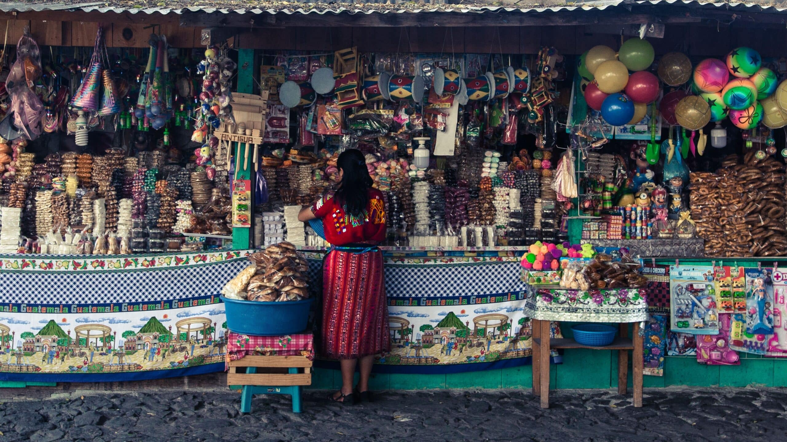

Guatemala is known for its rich indigenous heritage, with over 20 distinct indigenous groups that have preserved their customs and traditions for centuries. Each group has its own unique language, clothing, and rituals, adding to the country's cultural diversity. The Mayan influence is particularly prominent, with ancient ruins and archaeological sites serving as reminders of Guatemala's pre-Columbian past. Guatemalans are known for their loving atention to everyone, and food.
Soccer, known as "fútbol" in Guatemala, holds a special place in the hearts of Guatemalans and is deeply ingrained in the country's culture. It is the most popular sport in Guatemala, captivating both young and old. The passion for soccer can be felt in the streets, where children kick makeshift balls, and in the stadiums, where fans gather to cheer on their favorite teams.

Guatemalans are passionate about their festivals and celebrations, which are deeply rooted in both indigenous and Spanish colonial traditions. The most famous event is Semana Santa (Holy Week) in Antigua Guatemala, where processions, religious ceremonies, and stunningly intricate sawdust carpets attract visitors from around the world.
Traditional Arts and Crafts: Guatemalan artisans are renowned for their exquisite craftsmanship and the vibrant colors of their textiles. Handwoven fabrics, such as the intricate Mayan huipils (traditional blouses) and cortes (wraparound skirts), showcase a mastery of traditional techniques passed down through generations.
